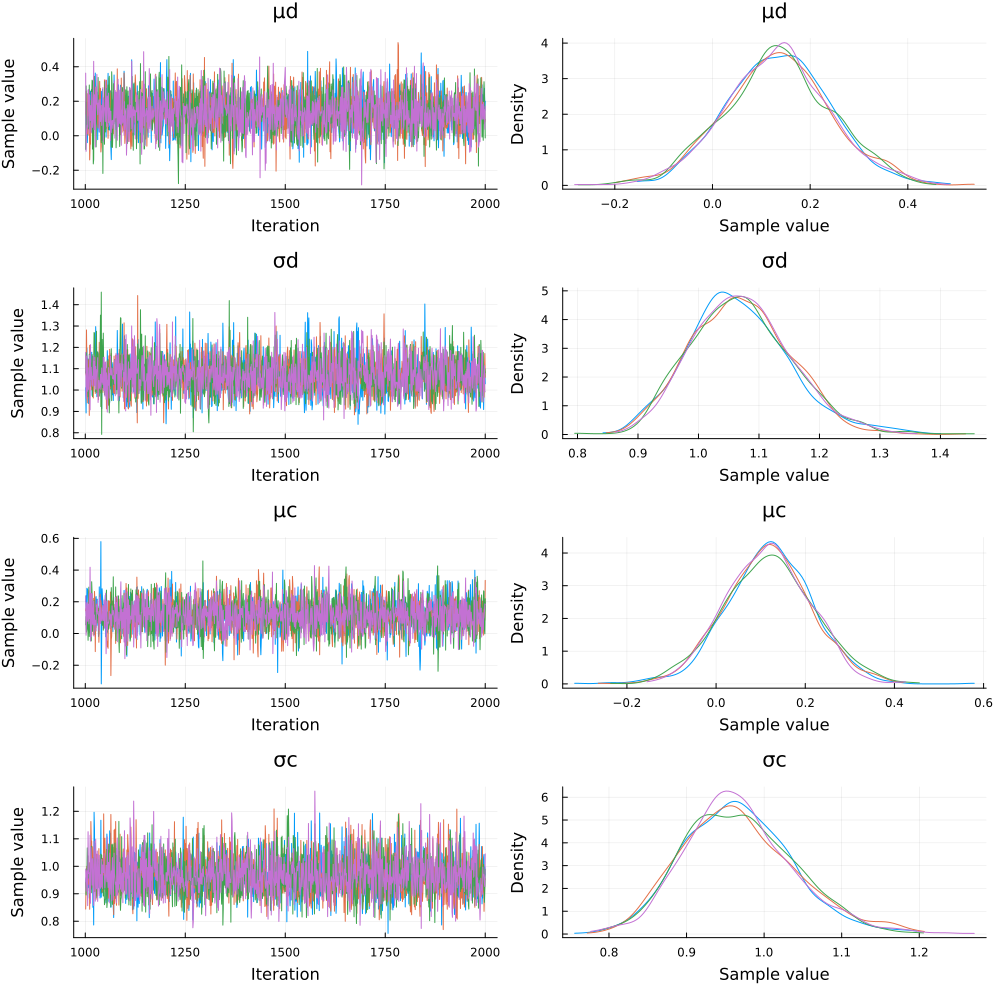

Overview
Full Code
You can reveal copy-and-pastable version of the full code by clicking the ▶ below.
Show Full Code
using Distributions
using Mooncake
using Random
using SignalDetectionModels
using StatsPlots
using Turing
Random.seed!(2185)
n_subj = 100
nₙ = 100
parms = map(1:n_subj) do _
d = rand(Normal(0, 1))
c = rand(Normal(0, 1))
(;d, c, nₙ)
end
data = map(Θ -> rand(SDT(; Θ...)), parms)
@model function turing_model(data, nₙ)
n_subj = length(data)
# mean of group-level discriminability
μd ~ Normal(0, 1)
# SD of group-level discriminability
σd ~ Gamma(2, 1)
d ~ filldist(Normal(μd, σd), n_subj)
# mean of group-level criterion
μc ~ Normal(0, 1)
# SD of group-level criterion
σc ~ Gamma(2, 1)
c ~ filldist(Normal(μc, σc), n_subj)
for i ∈ 1:n_subj
data[i] ~ SDT(; d = d[i], c = c[i], nₙ)
end
end
# adtype = AutoForwardDiff()
adtype = AutoMooncake()
chains = sample(turing_model(data, nₙ), NUTS(1000, 0.65; adtype), MCMCThreads(), 1000, 4)
group_chains = chains[:, [:μd, :μc, :σd, :σc],:]
describe(group_chains)
plot(group_chains)Load Dependencies
using Distributions
using Mooncake
using Random
using SignalDetectionModels
using StatsPlots
using TuringModel Configuration
Random.seed!(2185)
n_subj = 100
nₙ = 100100Generate Subject-Level Parameters
parms = map(1:n_subj) do _
d = rand(Normal(0, 1))
c = rand(Normal(0, 1))
(;d, c, nₙ)
end100-element Vector{@NamedTuple{d::Float64, c::Float64, nₙ::Int64}}:
(d = -1.4630458513089526, c = -0.14664174435689137, nₙ = 100)
(d = -0.6865167098380317, c = 1.2398511005662909, nₙ = 100)
(d = 1.1781613189015416, c = 1.3114557448413826, nₙ = 100)
(d = -1.5471743826551625, c = 0.06962972228648177, nₙ = 100)
(d = -1.3978233882228488, c = -0.9364569991510396, nₙ = 100)
(d = -0.05802943767222021, c = 0.13890045796270215, nₙ = 100)
(d = 1.4190829728908616, c = -2.03767671749094, nₙ = 100)
(d = -0.9728220659391172, c = 0.14363968532506352, nₙ = 100)
(d = 0.6855894454113424, c = -1.414007657898611, nₙ = 100)
(d = 0.06932596008055865, c = -0.4639933417337933, nₙ = 100)
⋮
(d = 0.7335231360249478, c = 0.6963638482072578, nₙ = 100)
(d = -0.13254918516057748, c = 0.2019342312285804, nₙ = 100)
(d = 0.014668833060195131, c = 0.5469213014285694, nₙ = 100)
(d = 1.179646486786501, c = 1.6100562408148893, nₙ = 100)
(d = -0.22329483926020355, c = 0.44059457879904723, nₙ = 100)
(d = 0.3072685496056652, c = -0.5672568994625429, nₙ = 100)
(d = 0.10161567832080967, c = 0.7663582195496762, nₙ = 100)
(d = -1.0328575647345128, c = 0.5460483349819097, nₙ = 100)
(d = -1.001898015138495, c = -0.7917820054760446, nₙ = 100)Generate Simulated Data
@model function turing_model(data, nₙ)
n_subj = length(data)
# mean of group-level discriminability
μd ~ Normal(0, 1)
# SD of group-level discriminability
σd ~ Gamma(2, 1)
d ~ filldist(Normal(μd, σd), n_subj)
# mean of group-level criterion
μc ~ Normal(0, 1)
# SD of group-level criterion
σc ~ Gamma(2, 1)
c ~ filldist(Normal(μc, σc), n_subj)
for i ∈ 1:n_subj
data[i] ~ SDT(; d = d[i], c = c[i], nₙ)
end
endturing_model (generic function with 2 methods)Estimate Parameters
chains = sample(turing_model(data, nₙ), NUTS(1000, 0.65; adtype = AutoMooncake()), MCMCThreads(), 1000, 4)
group_chains = chains[:, [:μd, :μc, :σd, :σc],:]
describe(group_chains)
Chains MCMC chain (1000×4×4 Array{Float64, 3}):
Iterations = 1001:1:2000
Number of chains = 4
Samples per chain = 1000
Wall duration = 17.12 seconds
Compute duration = 54.87 seconds
parameters = μd, σd, μc, σc
internals =
Summary Statistics
parameters mean std mcse ess_bulk ess_tail rhat ess_per_sec
Symbol Float64 Float64 Float64 Float64 Float64 Float64 Float64
μd 0.1339 0.1090 0.0016 4488.5820 3268.4618 0.9995 81.8069
σd 1.0701 0.0831 0.0013 4417.6982 3199.9839 0.9998 80.5150
μc 0.1178 0.0977 0.0015 4449.0158 2827.2720 1.0014 81.0858
σc 0.9674 0.0712 0.0011 4575.8835 3487.0255 1.0006 83.3980
Quantiles
parameters 2.5% 25.0% 50.0% 75.0% 97.5%
Symbol Float64 Float64 Float64 Float64 Float64
μd -0.0753 0.0637 0.1346 0.2039 0.3544
σd 0.9230 1.0112 1.0659 1.1219 1.2496
μc -0.0762 0.0530 0.1192 0.1822 0.3084
σc 0.8428 0.9173 0.9626 1.0119 1.1205Plot Group-Level Posterior Distributions
plot(group_chains)